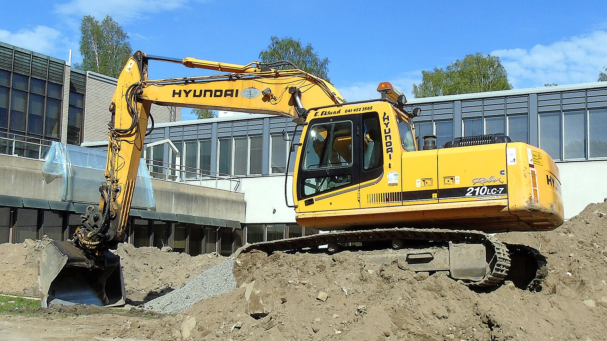
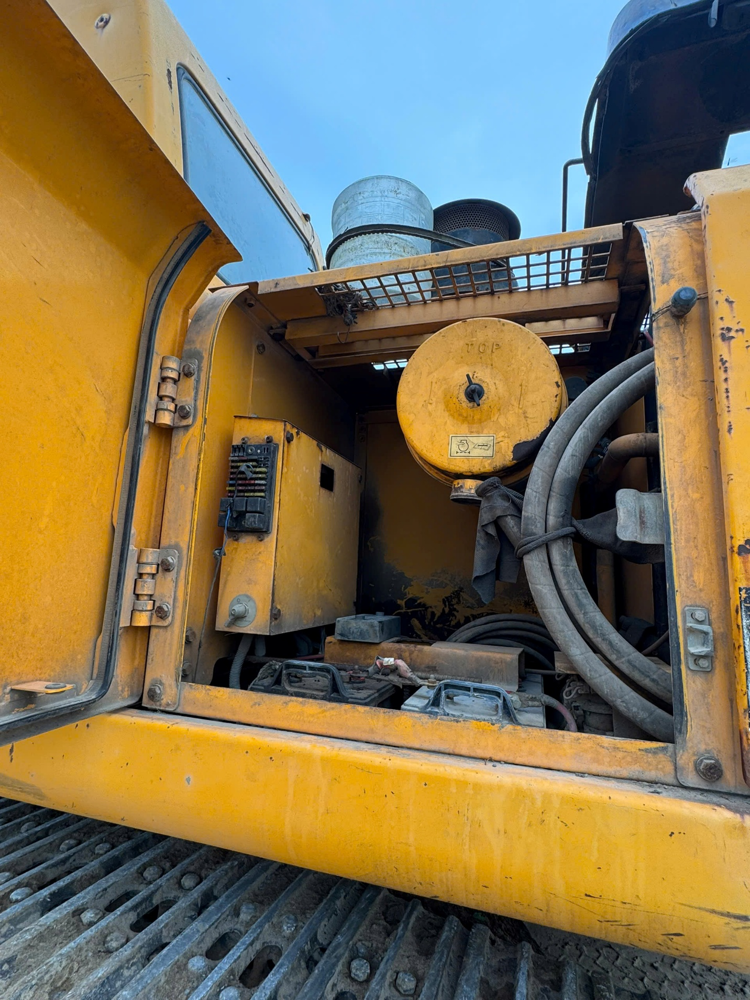
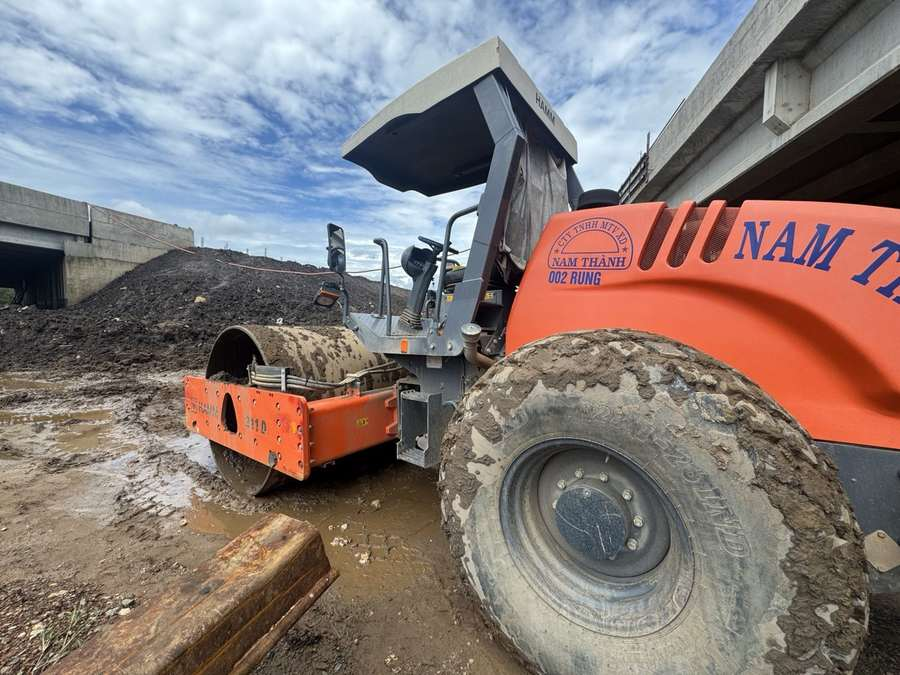

Project state, evidence interpretation, methods, code, reports and decision history.
01 / PROFILE
HCMUT · R&D · Mechanical Design · Vehicle Diagnostics
Hands-on engineering profile connecting vehicle fundamentals, CAD/CAE, field investigation and a structured technical workflow — from real evidence to design, simulation and practical problem solving.
02 / HOW I WORK
I organize evidence, project state and technical decisions so different work sessions can continue from a shared engineering context.
Project state, evidence interpretation, methods, code, reports and decision history.
Task decomposition, bounded claims, review gates and human verification — shown as a live system, not an empty placeholder.
Manuals, papers, datasheets, field media and raw measurements.
Scope, evidence, methods, code and reports stay traceable.
NX, ANSYS, electronics, data handling and documentation.
Outputs are checked against sources, field evidence and assumptions.
AI-assisted support is used for research, coding, troubleshooting and documentation; engineering outputs remain manually reviewed.
03 / CAD & CAE
Click either workspace to explore the actual captured session through focused views and the engineering process behind it.
The detail views use crops from the same verified workspace captures; they are not filename cards or generated engineering evidence.
04 / ROBEX FIELD INVESTIGATION
Whole-machine context gives scale; field images document the access and interface details that drive practical requirements.



05 / HAMM MACHINE SURVEY
Translate physical layout and site conditions into practical packaging, access and serviceability constraints.

06 / INTEGRATED R&D PROJECT
Field evidence → NX → ANSYS → sensors/electronics → data/diagnostics → validation.

Controller I/O, sensor wiring and prototype logic support monitoring experiments before field validation.
Field observations inform packaging. CAD and analysis shape prototype experiments. Validation remains planned R&D work, not a production claim.
07 / CONTACT & CV
Automotive Engineering student at HCMUT with hands-on exposure to field investigation, Siemens NX, ANSYS Mechanical, vehicle diagnostics and sensor-oriented R&D.